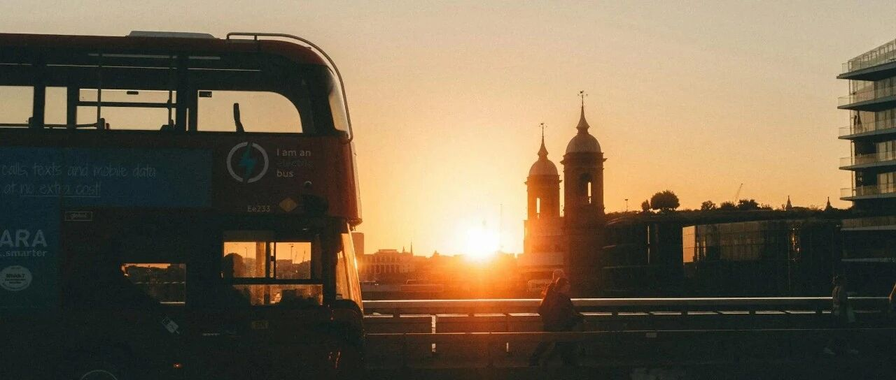

爱你在心口难开~
昨天大A又硬了一把。
茅台涨了9个点，我原计划1500+开始出仓，最后1485+开始出5%，1495+出5%，1505+出10%，1515+出10%，到1525+出10%，一共出了40%
余下的60%，准备今天接着出，昨晚又出了许多政策，预计今天上午整体情绪会高潮，是个很不错的出仓机会。
大A就是这么疯批，要么干爆空头，要么干爆多头，都是一顿猛操作，少有循序渐进。
节奏上，设置了1530+出10%，1540+出10%，1550+出10%，1555+出5%，1560+出5%……直到清仓为止。
我很少一股脑卖出，习惯按节奏分批次，这样的操作，好处很多。
总的来说，过去几年，在大A还是赚钱的，主要是最近七八年:
有之前写过精准在580-630元逃顶获利颇丰的宁德时代，有盈利一般的中国中免，还有割肉的中国平安，以及账面总盈利0.75个小目标+的茅台。
原本可以盈利更多的，结果茅台股票价格掉得太厉害，导致账面浮盈减少，落袋为安的就少了。
现在的政策挺多，发钱、发优惠券、减税这类让利于民的事，我觉得挺好的，多多益善，只要把那些搞无效基建的钱拿来改善民生，都算好事。
如果努力改善营商环境，多创造就业岗位，向底层输出购买力，做好社会福利保障制度，让人有钱花，有钱敢花，会是更好的长久之计。
还是有很长的路要走。现在新公司法也挺…不可不重视它的影响，横向纵向全穿透。
想想，也是到了该和大A说再见的时候，去年底的总结中我就写了这点，准备彻底远离它。对它的心情，恰如标题所写。
你可以爱一个人，但仍然选择和他说再见；你可以时常想念一个人，但仍然庆幸他已不在你的生命中。
说起炒大A的经历，印象比较深的都是亏损:08年亏麻了，然后跑去买房；15年亏麻了，又跑去买房。这次赚了，不准备买房了，哈哈。
清完茅台后，还剩沪铜，找个合适的时间也会清掉。慢慢远离这类消耗太多时间和精力，且波动大、确定性弱的投资。
个人精力有限，这段时间以及后续一段时间，会往确定性强的方向投资，前两个月清掉大饼，回笼资金，也是这个思路。
每天的涨跌很难解读，最好的做法是坚持自己的分析，在没有重大变化之前不要摇摆不定，止损或止赚离场都需要魄力。
现在手头有充足的弹药，在未来一段时间可以看自己中意的猎物。
至于大A，有机会的时候，抓紧赚钱，注意风险管控，抓好交易型机会:
GJ队买了那么多，不会是要来做慈善的，最终也是要赚钱的。
“吃饭行情”注定了，有人能吃，有人是饭。杠杆从未消失，只是从一个地方腾挪到了另一个地方，或者在等待毁灭。
昨晚看盘时翻了会书，大概内容是说:
纵观全球，发达国家主要用代表着政府信用的国债，充当货币锚；发展中国家主要用代表着西方政府信用的外汇资产，充当货币锚。
但是，一旦后者的锚定物改转为前者转变时，即以债为锚，那再跨出下一步，就是有些国家发生过的“无锚印钞”现象。
昨天买了恒生科技指数和恒生医药，二者的比例约8.5:1.5，个人认为港股的确定性比大A 强。
后续看情况再看是否加仓，目前这俩买的量也不小，短期内捞一把，不会长持。
美股中概股涨得很凶，历史上多次猛涨后暴跌，现在情绪是到位了，但基本面没有发生改变，所以没打算碰，不想再在这些东西上耗费时间和精力了，只做自己确定的事。
台积电189出了5%，成本终于压降了一些，原来大跌时我不断加仓，虽然成本降到145美刀，但总仓位占比和总成本太高，有点影响到后续的操作。
这次减持后，计划190+减持5%，195+再减持10%，这样把空间撑大，总仓位占比降低，给后续的操作留够空间。
AMD又涨，没有加仓的机会。以上是我个人账户的情况。
家庭账户也做了一些调整，这个账户之前写过，以科技、生物制药和消费三类为主。读者之前有问到这个账户的一些操作，可能也想了解，那就一并写写:
美股生物制药类最近涨得也还不错，减持了一些强生股票，大概10%，成本压降在低位，辉瑞也减持了5%左右；
消费股只持有沃尔玛、亚马逊、Costco，最近消费股也涨得不错，各减持了5%沃尔玛和Costco。
目前这几个成本都已经做得很低，大多只有目前股价的20%左右，空间够大，方便长期持有，其他没操作。
至于这轮政策下，房地产会怎样？
房地产差不多就那样了，没什么好说的，翻来翻去，都是那些陈年老豆腐，翻多了发酸，没什么新意。
房地产出清进入下半场，开始由政策（保房价、限跌令等）主导转向市场主导，在市场主导面前，任何政策都只能是聊胜于无的水平。
因为基本面没有发生改变，收入和钱包、供求关系都还没有得到扭转。
就这样吧。